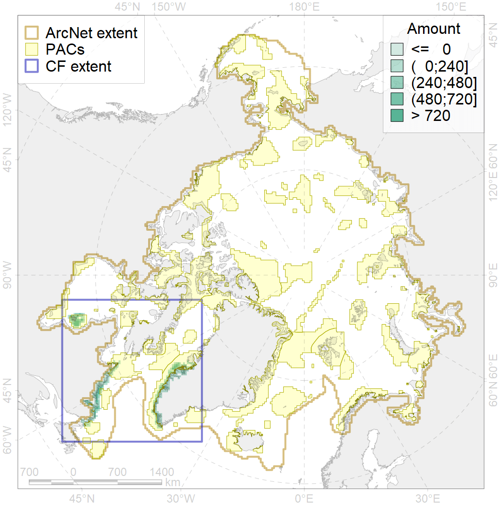
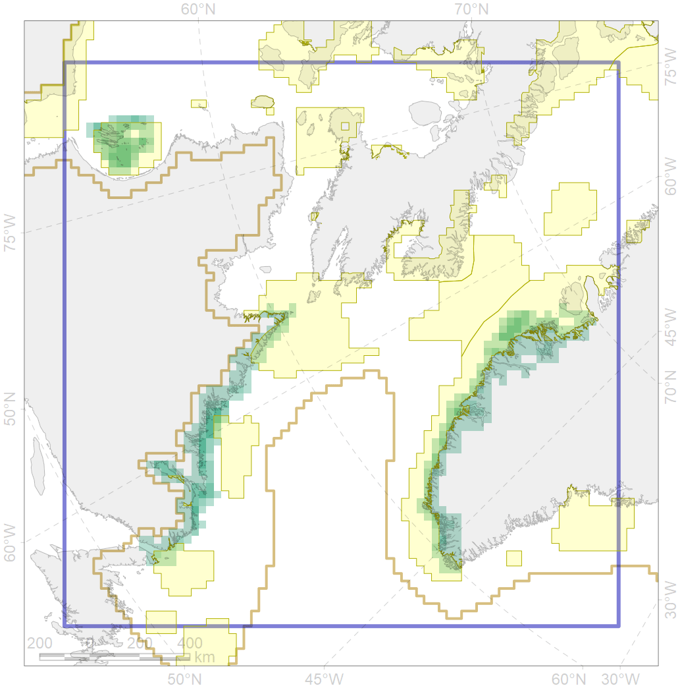

6072

| CF code | 6072 |
| CF name | King eider (Somateria spectabilis) Canadian winetring grounds |
| Time Period | 2010 |
| Source(s) | Powell & Suydam 2012 |
| Seasonality | October-April |
| Depth Horizon | <0 m |
| Methodology | Field Data |
| Use Restrictions | Open source |
| Author Name | Gavrilo, Tertitski |
| Notes | |
| Scenario’s Target | 0.48 |
| Target Achievement | 0.556 (Scenario: 115.9%) |
| PAC | Share of the Total Amount within the PAC | Share of the Target Achievement for the ArcNet | PAC’s Contribution to the Target Achievement |
|---|---|---|---|
| 44 | 24.3%29.5% | 48.5%58.0% | 41.8%50.0% |
| 71 | 20.1% | 41.5% | 35.8% |
| 76 | 2.5%3.2% | 5.1%6.6% | 4.4%5.7% |
| 77 | 1.6% | 2.6% | 2.2% |
| 78 | 0.2%0.6% | 0.3%1.1% | 0.2%0.9% |
| 79 | 1.1%1.8% | 0.9%1.0% | 0.8%0.8% |
| inner | 49.8%56.9% | 98.8%110.6% | 85.3%95.5% |
| outer | 50.2%71.1% | 17.0%55.3% | 14.7%47.7% |
| † supplement values are for area consistence whereas principal values are for Accenter compatible gridded stats |